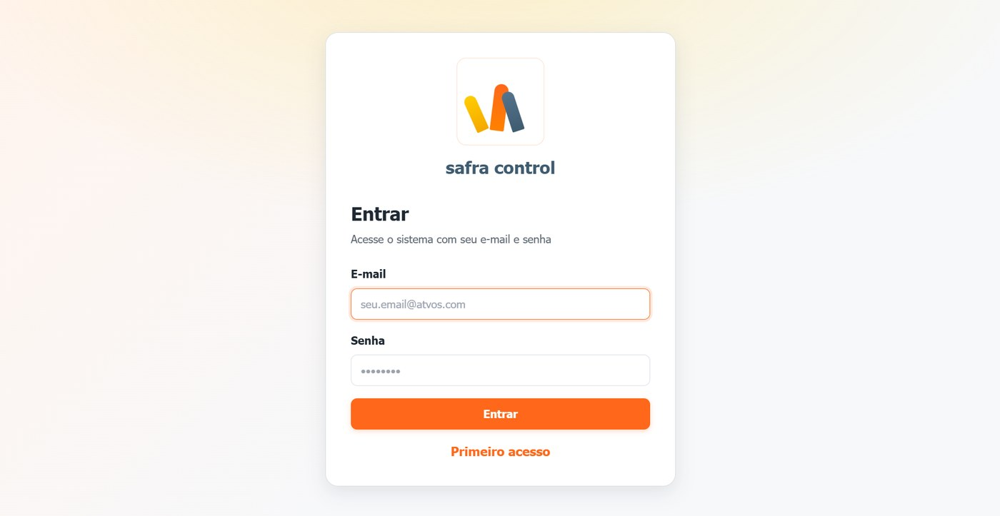
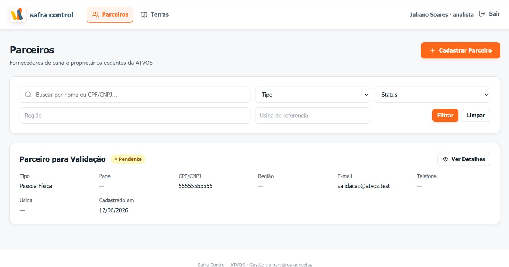
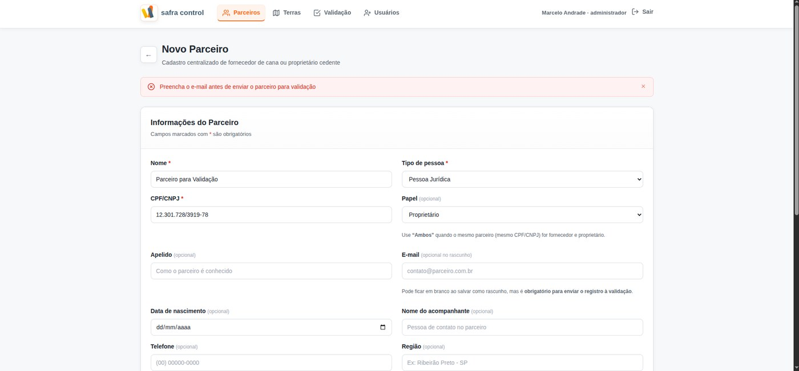
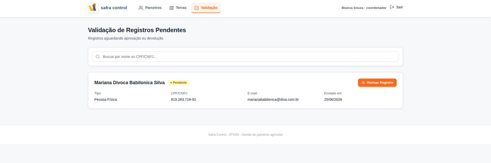
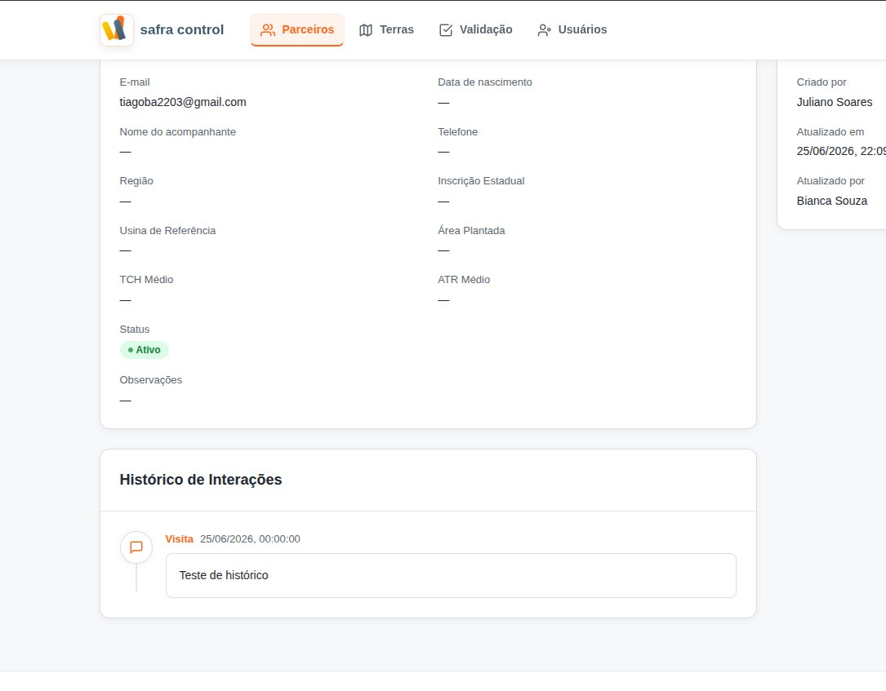
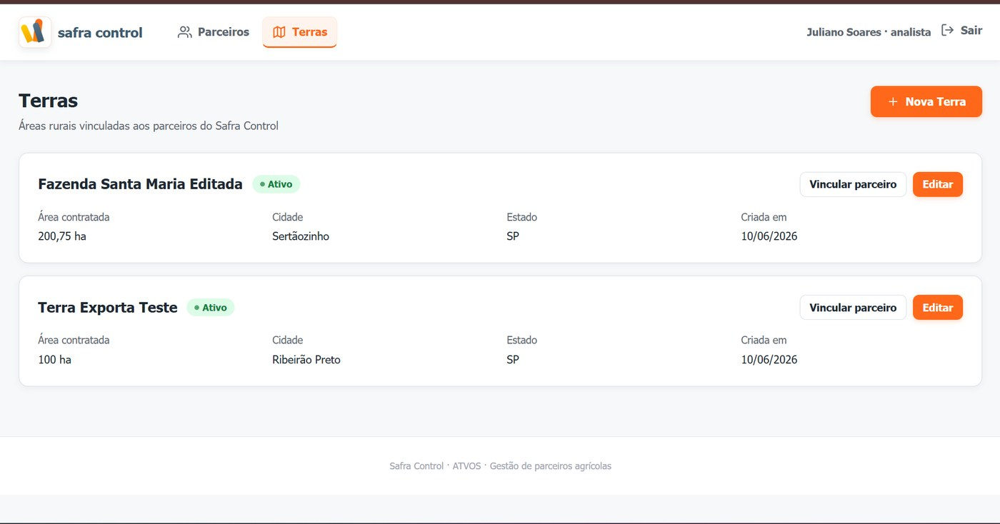
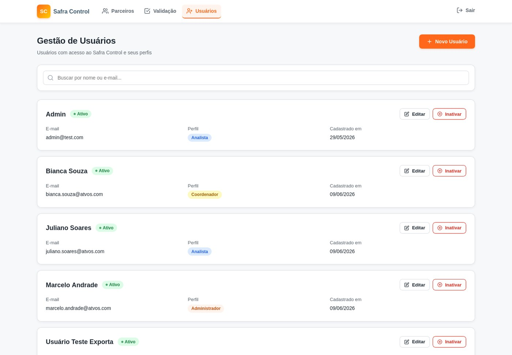

Safra Control
 Projeto acadêmico do Inteli com a ATVOS
Projeto acadêmico do Inteli com a ATVOS
Sobre o projeto
CRM web desenvolvido para a ATVOS, a terceira maior empresa de moagem de cana do Brasil, no Módulo 2 do Inteli. A empresa controlava parceiros de terra e fornecedores em planilhas dispersas, sem histórico centralizado, e perdia contexto a cada mudança de equipe: o relacionamento morava na cabeça de quem atendia, não na empresa.
Em um time de 7, entregamos um sistema que centralizou o cadastro de parceiros, o pipeline por etapa, o histórico rastreável de interações e os indicadores usados pela área de Negócios Agrícolas, com filtros por nome, região e tipo de parceiro, exportação de listas, registro automático de auditoria em todas as alterações e controle de acesso em três perfis.
Na última sprint o foco foi qualidade: suíte de testes automatizados com Jest e Supertest, unitários e de integração, com cobertura e rastreabilidade de caso de teste até a regra de negócio, análise de complexidade com ESLint, detecção de duplicação e de dependência circular, e refatoração dos trechos mais difíceis com guard clauses. O projeto foi aprovado pela ATVOS e está em produção.
Tecnologias utilizadas
Minha contribuição
Atuei em todas as etapas do projeto, com foco maior no back-end e nos dados, e também na qualidade do código: fui responsável por escrever a suíte de testes automatizados, medir complexidade e duplicação e refatorar o sistema sem quebrar contrato de nenhuma rota.
Galeria

Acesso ao sistema
A entrada é por e-mail corporativo e senha, com fluxo de primeiro acesso. Cada usuário carrega um dos três perfis do sistema, e é o perfil que decide o que ele vê e o que pode alterar dali para frente.

Lista de parceiros
A tela que substituiu as planilhas: fornecedores de cana e proprietários cedentes em um lugar só, com busca por nome ou CPF/CNPJ e filtros por tipo, status, região e usina de referência. A lista também exporta em CSV para quem precisa levar o dado para fora.

Cadastro com regras de negócio
O cadastro aceita rascunho incompleto, mas cobra o que a regra exige na hora de enviar o registro para validação. A mensagem no topo é exatamente isso acontecendo: o sistema explica o que falta em vez de simplesmente recusar o formulário.

Fila de validação
Todo cadastro passa por uma fila antes de virar registro oficial. O coordenador revisa, aprova ou devolve, e o parceiro só entra na base ativa depois disso. É o ponto do sistema que troca confiança no preenchimento por conferência explícita.

Histórico e auditoria
A ficha do parceiro guarda quem criou, quem atualizou e quando, e abaixo o histórico de interações com o cliente. Era a informação que antes morria com a pessoa que atendia; aqui ela fica na empresa.

Terras vinculadas
Áreas rurais ligadas a cada parceiro, com área contratada, cidade e estado. O vínculo entre terra e parceiro é o que permite enxergar o relacionamento comercial junto com o ativo que está em jogo.

Usuários e perfis
Gestão dos usuários do sistema em três perfis: analista, coordenador e administrador. Dá para cadastrar, editar e inativar sem apagar histórico, o que preserva a rastreabilidade de quem fez o quê.